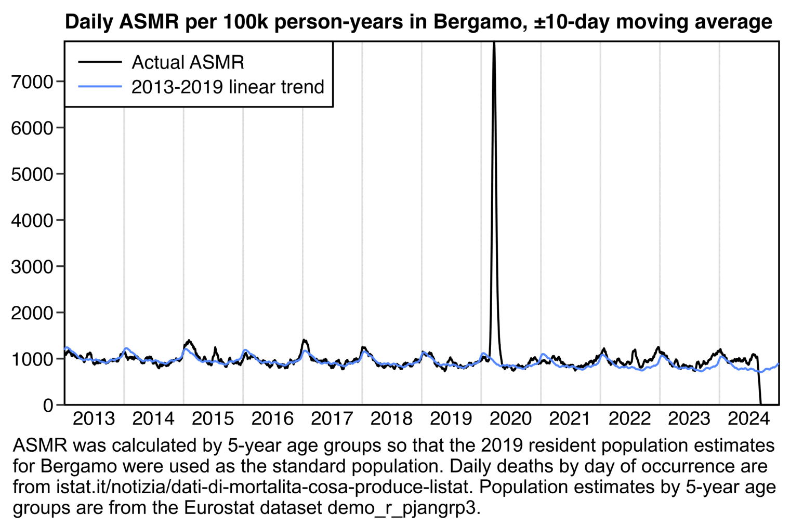
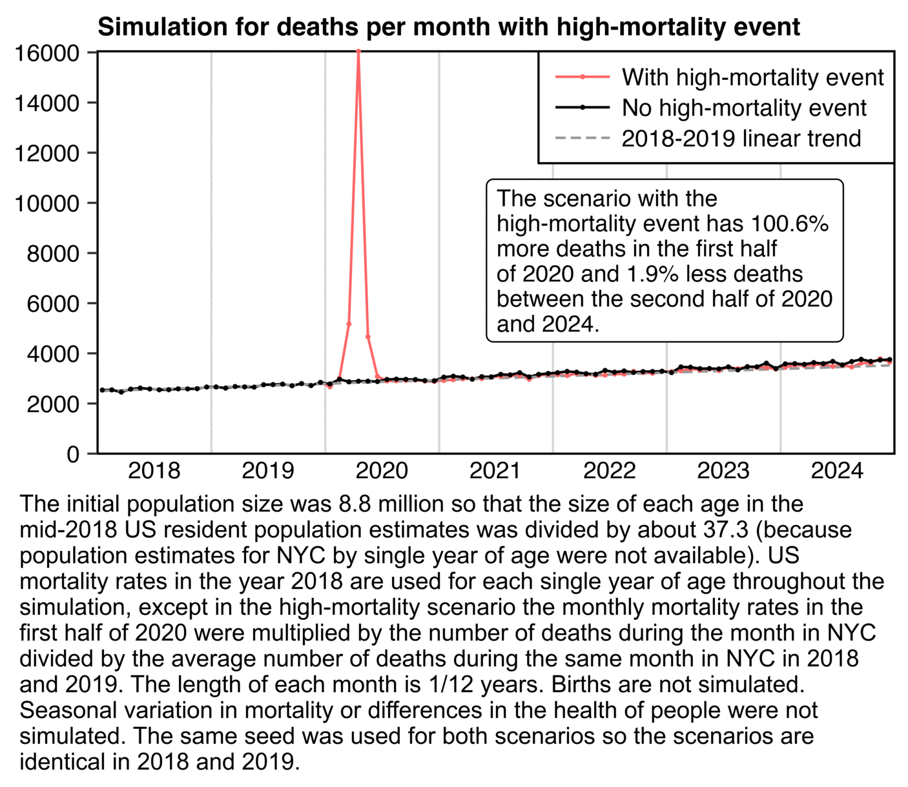

An old myth got revived in GER around "Bergamo mass deaths must be a fake because there was no mass death deficit afterwards"
What gets forgotten is that such a deficit is a) small (4% of the excess with covid) b) mostly taken care off in mortality trend based expected deaths
First of all: why is the displacement small? Here is the simplest way to explain it
The average age of a covid death in Spring 2020 in Bergamo was 80
If you look at the annual probability of dying in Italy of an 80 yo, <5% with die aged 81 or 82 (ie in 2021 or 2022 for Bergamo)
If you get now confused because you get 83 years after googling "Life Expectancy Italy", that's because the 83 years is the expectancy at BIRTH
Once you reach 80, your life expectancy is 10 years and that explains why the stats say that only <5% of 80s old die annually at first
Let's go back to Bergamo: The huge spike of deaths led to 6,000 excess deaths on a usual basis of 10,000 (rounded)
So these 6,000, aged 80 on average, will be "missing" in the death statistics of the following years and expectations need to be corrected accordingly
How much does make out annually? It means approx. 250-300 fewer deaths to be expected in 2021-2023 (4-5% of 6,000)
So you see, despite a 60% excess in 2020, stats tell you that there are ONLY 2.5-3% fewer deaths (ie a tiny %) to be expected less annually in 2021-2023
But there is more: Most advanced stats and health institutions monitor excess mortality against trends from MORTALITY RATES, not deaths
The reason is that the rate of improvement of mortality rates has been more or less linear over the past years (so a good indicator)
What one then does is to multiply these expected mortality rates (ideally by age band) by population actuals to get expected deaths
This also has the advantage to automatically incorporate the changes in age pyramid seen lately in western democracies, especially in old age bands
But this has the additional advantage that this method for expected deaths immediately also incorporates a massive excess in one year
Why? Because (here for Bergamo) the population will be smaller the year there after and the expected deaths automatically corrected accordingly
And this is exactly what happens in Bergamo
After an "upwards trend up to 2019", expected deaths from mortality rates then go down after 2020 due to the sizeable excess
(also they are roughly the same as the one calculated using corrected deaths, as they should be)
In summary, there are two "ahas" on death displacement following excess
TAKEAWAY 1: Views that "Bergamo's huge death peak is fake because we didn't see a massive deficit in the subsequent years" are just an expression of a lack of understanding how mortality works
TAKEAWAY2: In principle, high excess in a year does not require tweaking the expected deaths thereafter if these were estimated from mortality trends
I mention this because I see this argument made regularly
FWIW, all my mortality analysis is based on mortality trend
END
I took the 2019 US life table for both sexes combined from the spreadsheet linked here: https://www.cdc.gov/nchs/data/nvsr/nvsr70/nvsr70-19.pdf. I then calculated excess deaths for each age in NYC relative to a 2010-2019 linear trend, but the average life expectancy of the people who died in excess was about 15 years, even though the average age of the people who died in excess was about 73. I excluded ages 0 to 15 because they had some years with less than 10 deaths so the number of deaths was suppressed by CDC WONDER. And even when I excluded all ages below 50 to reduce the impact of drug deaths, the average life expectancy remained at about 13 years:
download.file("https://ftp.cdc.gov/pub/Health_Statistics/NCHS/Publications/NVSR/70-19/Table01.xlsx","Table01.xlsx")
t=data.table(readxl::read_excel("Table01.xlsx",skip=2))
t=t[,.(age=as.numeric(sub("\\D.*","",t[[1]])),expectancy=ex)][1:101]
# deaths where county of residence was one of 5 counties of NYC at CDC WONDER
dead=fread("http://sars2.net/f/nycyearlydead.csv")[age>=16]
base=dead[year%in%2010:2019,.(year=2020,base=predict(lm(dead~year),.(year=2020))),age]
me=merge(t,merge(base,dead)[,.(excess=dead-base,age)])
me[,weighted.mean(age,excess)] # 73.04446 (average age of excess deaths)
me[,weighted.mean(expectancy,excess)] # 15.1019 (life expectancy for ages 16 and above)
me[age>=50,weighted.mean(expectancy,excess)] # 12.98951 (life expectancy for ages 50 and above)
However if the mean life expectancy of people who died in excess in NYC in 2020 was about 15 years, many of the people aren't expected to have died even 15 years after 2020, so the PFE adjustment should last much longer than until the end of October 2027.
Ethical Skeptic came up with the figure of 6.6 years because he said the average age of COVID deaths in Florida was 82, and he got a life expectancy of 6.6 years for age 82 from some unspecified source (even though in the 2019 US life expectancy table the life expectancy for age 82 is about 8.2 years):
At CDC WONDER the average age of UCD COVID deaths was 73.8 in Florida and about 73.9 in the whole US. And in the 2019 life table the life expectancy for age 74 is about 13.1 years, so it's about twice as high as Ethical Skeptic's figure of 6.6 years. And the average of life expectancies for each age weighted by the number of COVID deaths for the age was about 14.5 years:
# 2019 life expectancy table for both sexes combined
download.file("https://ftp.cdc.gov/pub/Health_Statistics/NCHS/Publications/NVSR/70-19/Table01.xlsx","Table01.xlsx")
t=na.omit(data.table(readxl::read_excel("Table01.xlsx",skip=2)))
# UCD COVID deaths by single year of age from CDC WONDER (last value is age 100 or above)
coviddead=c(363,116,46,41,39,30,38,32,33,47,40,35,41,56,51,97,88,130,162,210,255,288,367,407,499,530,620,707,819,979,1112,1255,1329,1441,1607,1703,1850,2066,2237,2502,2713,2987,3253,3486,3942,4197,4610,4912,5686,6278,7075,7365,8017,8227,8942,9822,11084,11748,12866,14070,15174,16061,17259,18347,19229,20037,20443,20874,22012,22623,23586,24446,25783,27417,27760,26024,26237,27531,28188,27690,27437,27093,27200,27223,26753,26849,26190,25121,24827,24104,22756,21336,19309,17787,15069,12656,10416,8337,6321,4626,8773)
weighted.mean(t$ex,coviddead) # 14.50457
The following code shows the average life expectancy by month for deaths with UCD COVID. I now calculated the life expectancy separately for males and females even though it didn't make much difference. CDC WONDER suppresses the number of deaths on rows with less than 10 deaths, so I got the number of COVID deaths from the fixed-width files for the NVSS data instead: stat.html#Download_fixed_width_and_CSV_files_for_the_NVSS_data_used_at_CDC_WONDER. The life expectancy was unsurprisingly much higher in 2021 than 2020 (which is because the percentage of COVID deaths in 2021 relative to 2020 is much higher in working-age people than in elderly people, which might be because in 2021 working-age people were less likely to be vaccinated than elderly people):
Next I made the simulation below using data from ISTAT and Eurostat: http://dati.istat.it/Index.aspx?QueryId=42869&lang=en, https://ec.europa.eu/eurostat/api/dissemination/sdmx/2.1/data/demo_r_mwk3_t?format=TSV. At first I also tried simulating different people having different levels of health, but I didn't find an accurate way to do it so I left it out of the simulation. When I simply assigned a fixed health multiplier to each person, the people with poor health tended to die at the start of the simulation which artificially elevated deaths at the start of the simulation compared to the end of the simulation. So I should've also modeled the health status of people getting worse over time so that over time new people would've gradually entered the verge of death, but it seemed too difficult to model realistically. But anyway, here in the red scenario where I simulated a spike in excess deaths in spring 2020, I got only about 3.4% less deaths in 2021-2024 than in the black scenario without the spike:
library(data.table);library(ggplot2)
euro=fread("https://ec.europa.eu/eurostat/api/dissemination/sdmx/2.1/data/demo_r_mwk3_t?format=TSV")
x=unlist(euro[euro[[1]]%like%"ITC46"])[-1];x=x[x!=":"]
d=data.table(year=as.integer(substr(names(x),1,4)),week=as.integer(substr(names(x),7,8)))[,x:=1:.N]
d$dead=as.integer(sub(" .*","",x))
d$trend=d[year%in%2013:2019,predict(lm(dead~x),d)]
d=merge(d,d[year%in%2013:2019,.(weekly=mean(dead-trend)),week])
mult=d[year==2020&week%in%9:19,dead/(trend+weekly)]
pop=c(7406,7625,7880,7909,8570,8867,9439,9725,9850,10350,10545,10991,11427,11617,11950,11864,11816,11905,11706,11809,11864,11769,11942,12225,11878,12078,12004,11527,11715,11477,11525,11993,11984,12231,12064,12631,12406,12205,12752,13256,13417,13627,14005,14351,14612,15773,16026,16577,17824,18126,18084,18163,17907,18161,18285,18240,18270,18805,18653,18690,17266,16377,15528,15325,14804,14145,13294,13184,12725,12372,12000,11680,11546,12114,11851,11748,10684,10850,8014,8288,7876,7855,7494,7977,7060,6379,5353,4372,4140,3445,2908,2471,2016,1701,1185,908,660,456,294,229,281)
life=fread("http://sars2.net/f/bergamolifetable.csv")
cmr=life[,sum(deaths)/(sum(deaths)+sum(survivors)),.(age=pmin(age,100))]$V1/52
simweeks=52*7
weekmult=rep(1,simweeks);weekmult[113:123]=mult
people=data.table(age=rep(0:100,pop))[,age:=age+runif(.N)]
people2=copy(people)
sim=data.table(week=1:simweeks,dead=0,dead2=0)
set.seed(0)
for(i in 1:simweeks){
died=people[,rbinom(.N,1,pmin(1,cmr[age+1]*weekmult[i]))]
people=people[died!=1][,age:=pmin(100,age+1/52)]
sim$dead[i]=sum(died)
}
set.seed(0)
for(i in 1:simweeks){
died=people2[,rbinom(.N,1,pmin(1,cmr[age+1]))]
people2=people2[died!=1][,age:=pmin(100,age+1/52)]
sim$dead2[i]=sum(died)
}
sim$base=sim[week<105,predict(lm(dead~week),sim)]
lab=c("High-mortality event in 2020","No high-mortality event","2018-2019 linear trend")
p=sim[,.(x=week,y=unlist(.SD[,-1]),z=factor(rep(lab,each=.N),lab))]
sum=sim[week%in%105:156,colSums(.SD)]
sum2=sim[week>156,colSums(.SD)]
note=stringr::str_wrap(sprintf("The scenario with the high-mortality event has %.1f%% more deaths in 2020 and %.1f%% less deaths in 2021 to 2024.",(sum[2]/sum[3]-1)*100,(sum2[3]/sum2[2]-1)*100),32)
xstart=1;xend=simweeks+1;xbreak=seq(xstart,xend,26);xlab=c(rbind("",2018:2024),"")
ybreak=pretty(c(0,p$y),8);ystart=0;yend=max(p$y)
ggplot(p,aes(x,y))+
geom_rect(xmin=113,xmax=123,ymin=0,ymax=yend,fill="#ffe5e5")+
geom_vline(xintercept=seq(xstart,xend,52),linewidth=.25,color="gray85",lineend="square")+
geom_hline(yintercept=c(ystart,yend),linewidth=.3,lineend="square")+
geom_vline(xintercept=c(xstart,xend),linewidth=.3,lineend="square")+
geom_line(aes(color=z,linetype=z),linewidth=.35)+
labs(title="Simulation for deaths per week in Bergamo",x=NULL,y=NULL)+
annotate(geom="label",x=.46*xend,y=yend*.44,label=note,hjust=0,label.r=unit(2,"pt"),label.padding=unit(3,"pt"),label.size=.2,size=2.4,lineheight=.9)+
scale_x_continuous(limits=c(xstart,xend),breaks=xbreak,labels=xlab)+
scale_y_continuous(limits=c(ystart,yend),breaks=ybreak)+
scale_color_manual(values=c("#f66","black","gray60"))+
scale_linetype_manual(values=c("solid","solid","42"))+
coord_cartesian(clip="off",expand=F)+
theme(axis.text=element_text(size=7,color="black"),
axis.text.y=element_text(margin=margin(,1)),
axis.ticks=element_line(linewidth=.3),
axis.ticks.length=unit(3,"pt"),
axis.ticks.length.x=unit(0,"pt"),
legend.direction="vertical",
legend.justification=c(1,1),
legend.key=element_blank(),
legend.key.height=unit(9,"pt"),
legend.key.width=unit(20,"pt"),
legend.background=element_rect(color="black",linewidth=.3),
legend.margin=margin(3,3,3,3),
legend.position=c(1,1),
legend.spacing.x=unit(1.5,"pt"),
legend.spacing.y=unit(0,"pt"),
legend.text=element_text(size=7),
legend.title=element_blank(),
panel.background=element_blank(),
plot.margin=margin(4,4,2,4),
plot.title=element_text(size=7.3,face="bold",margin=margin(1,,3)))
ggsave("1.png",width=3.7,height=2,dpi=380*4)
sub=paste0("Resident population estimates for Bergamo in 2019 were used as the intial population size for each age (from dati.istat.it/Index.aspx?QueryId=42869). The total initial population size was 1,111,228. Mortality rates from the 2019 life table for Bergamo at ISTAT are used throughout the simulation, except in the high-mortality scenario the mortality rates during weeks 9 to 19 of 2020 were multiplied by actual deaths in Bergamo on the same weeks of 2020 divided by a seasonality-adjusted 2013-2019 baseline (from Eurostat dataset demo_r_mwk3_t).")
sub=paste0(sub," Each year is exactly 52 weeks long. Births were not simulated. Seasonal variation in mortality or differences in the health of people were not simulated. The same seed was used for both scenarios so the scenarios are identical in 2018 and 2019.")
system(paste0("mar=120;w=`identify -format %w 1.png`;magick 1.png \\( -size $[w-mar*2]x -font Arial -interline-spacing -4 -pointsize 146 caption:'",gsub("'","'\\'",sub),"' -gravity southwest -splice $[mar]x70 \\) -append -resize 25% -colors 256 1.png"))
The difference between my simulated scenarios is easier to see in the next plot where I truncated the y-axis and I plotted the deaths as moving averages. But in the case of Bergamo the excess deaths were concentrated to such a brief period of time that the "PFE arrival function" is more like a square wave than a sine wave, and the depth of the PFE adjustment is more shallow than in plots by ES (or actually my red line is about 3.4% lower on average than the black line in 2021-2024, so it's not much lower than the average depth of Ethical Skeptic's PFE arrival function in 2021-2024, but the depth is still shallower relative to the percentage of excess deaths which was higher in Bergamo than the United States):
In the next plot for ASMR in Bergamo, there was a slight dip in ASMR below the baseline around mid-2020, but it might be random noise because many other years before 2020 had similar dips below the baseline. I used yearly population estimates on January 1st of each year interpolated to daily estimates, so the population size in mid-2020 was already partially reduced by COVID deaths in spring 2020 but it was still probably overestimated:

download.file("https://ec.europa.eu/eurostat/api/dissemination/sdmx/2.1/data/demo_r_pjangrp3?format=TSV","demo_r_pjangrp3.tsv")
library(data.table);library(ggplot2)
seapre=\(x,y,xout=x,spar=.5){class(x)=class(xout)="Date"
d=data.frame(x,y);lm=lm(y~x,d)
daily=tapply(y-predict(lm,list(x)),substr(x,6,10),mean)
daily=daily[names(daily)!="02-29"]
daily[]=smooth.spline(rep(daily,3),spar=spar)$y[366:730]
daily["02-29"]=mean(daily[c("02-28","03-01")])
data.frame(x=xout,y=predict(lm,list(x=xout))+daily[substr(xout,6,10)])}
ma=\(x,b=1,f=b){x[]=rowMeans(embed(c(rep(NA,b),x,rep(NA,f)),f+b+1),na.rm=T);x}
dead=fread("comuni_giornaliero_31agosto24.csv.gz",na="n.d.")[NOME_PROVINCIA=="Bergamo"]
dead=dead[,.(age=c(0,1,1:20*5)[CL_ETA+1],year=rep(2011:2024,each=.N),month=GE%/%100,day=GE%%100,dead=unlist(.SD[,38:51]))]
dead=dead[,.(dead=sum(dead,na.rm=T)),.(age=pmin(age,90)%/%5*5,year,month,date=as.Date(paste(year,month,day,sep="-")))]
pop=fread("demo_r_pjangrp3.tsv",header=T,na=":")
meta=fread(text=pop[[1]],header=F)
pop=cbind(meta[,4],pop[,-1])[meta[,V2=="T"&V5=="ITC46"&!V4%in%c("TOTAL","Y_GE85","UNK")]]
pop[,age:=ifelse(V4=="Y_LT5",0,as.integer(sub("\\D+(\\d+).*","\\1",V4)))]
pop=pop[,.(age,year=rep(2014:2023,each=.N),pop=as.integer(sub(" .*","",unlist(.SD[,2:11],,F))))]
pop[,date:=as.Date(paste0(year,"-1-1"))]
pop=pop[,spline(date,pop,xout=unique(dead$date)),age][,.(date=`class<-`(x,"Date"),pop=y,age)]
me=merge(pop[date=="2019-1-1",.(age,std=pop/sum(pop))],merge(pop,dead))
a=me[,.(asmr=sum(dead/pop*std*365e5)),.(date,year,month)][order(date)][year!=2011]
a$base=a[year%in%2013:2019,seapre(date,asmr,a$date,0)]$y
lab=c("Actual ASMR","2013-2019 linear trend")
p=a[,.(x=date,y=c(asmr,base),z=factor(rep(lab,each=.N),lab))]
p[,y:=ma(y,10),z]
xstart=as.Date("2013-1-1");xend=as.Date("2025-1-1")
xbreak=seq(xstart,xend,"6 month");xlab=ifelse(month(xbreak)==7,year(xbreak),"")
ybreak=p[,pretty(c(0,y),9)];ystart=0;yend=max(p$y)
ggplot(p,aes(x,y))+
geom_vline(xintercept=seq(xstart,xend,"year"),linewidth=.25,color="gray85",lineend="square")+
geom_hline(yintercept=c(ystart,yend),linewidth=.3,lineend="square")+
geom_vline(xintercept=c(xstart,xend),linewidth=.3,lineend="square")+
geom_line(aes(color=z),linewidth=.35)+
labs(title="Daily ASMR per 100k person-years in Bergamo, ±10-day moving average",x=NULL,y=NULL)+
scale_x_continuous(limits=c(xstart,xend),breaks=xbreak,labels=xlab)+
scale_y_continuous(limits=c(ystart,yend),breaks=ybreak)+
scale_color_manual(values=c("black","#58f"))+
coord_cartesian(clip="off",expand=F)+
theme(axis.text=element_text(size=7,color="black"),
axis.text.y=element_text(margin=margin(,1)),
axis.ticks=element_line(linewidth=.3),
axis.ticks.length=unit(3,"pt"),
axis.ticks.length.x=unit(0,"pt"),
legend.direction="vertical",
legend.justification=c(0,1),
legend.key=element_blank(),
legend.key.height=unit(9,"pt"),
legend.key.width=unit(20,"pt"),
legend.background=element_rect(color="black",linewidth=.3),
legend.margin=margin(3,3,3,3),
legend.position=c(0,1),
legend.spacing.x=unit(1.5,"pt"),
legend.spacing.y=unit(0,"pt"),
legend.text=element_text(size=7),
legend.title=element_blank(),
panel.background=element_blank(),
plot.margin=margin(4,4,2,4),
plot.title=element_text(size=7.5,face="bold",margin=margin(1,,3)))
ggsave("1.png",width=4,height=2.2,dpi=380*4)
sub="ASMR was calculated by 5-year age groups so that the 2019 resident population estimates for Bergamo were used as the standard population. Daily deaths by day of occurrence are from istat.it/notizia/dati-di-mortalita-cosa-produce-listat. Population estimates by 5-year age groups are from the Eurostat dataset demo_r_pjangrp3."
system(paste0("mar=86;w=`identify -format %w 1.png`;magick 1.png \\( -size $[w-mar*2]x -font Arial -interline-spacing -4 -pointsize 146 caption:'",gsub("'","'\\'",sub),"' -gravity southwest -splice $[mar]x70 \\) -append -resize 25% -colors 256 1.png"))
In the next plot I did a similar simulation for NYC as the earlier simulation for Bergamo. Now the number of deaths in the red scenario where I simulated the COVID event was afterwards only about 1.9% lower than in the black scenario without the COVID event. I don't know why the reduction was so much smaller than in the simulation for Bergamo, even though the total percentage of excess deaths in the first half of 2020 was only slightly higher in Bergamo than NYC:

library(data.table);library(ggplot2)
simmonths=12*7
monthmult=rep(1,simmonths)
nyc=fread("http://sars2.net/f/nycmonthlydead.csv")
fread("http://sars2.net/f/nycyearlydead.csv")[,sum(dead),year]
monthmult[25:30]=merge(nyc[year<2020,mean(dead),month],nyc)[year==2020,dead/V1][1:6]
nypop=fread("https://www2.census.gov/programs-surveys/popest/datasets/2010-2020/counties/asrh/CC-EST2020-ALLDATA6-36.csv")
nypop=nypop[CTYNAME%like%"Bronx|Kings|New York|Richmond|Queens"&YEAR==11&AGEGRP>0,sum(TOT_POP),AGEGRP]$V1[-1]
pop=fread("http://sars2.net/f/uspopdead.csv")[year==2018]
cmr=pop[,dead/pop]/365*12
popfrac=pop[,sum(pop)/8.8e6]
people=data.table(age=pop[,rep(age,pop/popfrac)])[,age:=age+runif(.N)]
people$health=1 # don't model health of people
# sd=1;people[,health:=2^rnorm(.N,log(2)*sd^2/-2,sd)] # include health multipliers in model
sim=data.table(month=1:simmonths,dead=0,dead2=0)
people2=copy(people)
set.seed(0)
for(i in 1:simmonths){
died=people[,rbinom(.N,1,pmin(1,cmr[age+1]*health*monthmult[i]))]
people=people[died!=1][,age:=pmin(100,age+1/12)]
sim$dead[i]=sum(died)
}
set.seed(0)
for(i in 1:simmonths){
died=people2[,rbinom(.N,1,pmin(1,cmr[age+1]*health))]
people2=people2[died!=1][,age:=pmin(100,age+1/12)]
sim$dead2[i]=sum(died)
}
sim$base=sim[month<25,predict(lm(dead~month),sim)]
lab=c("With high-mortality event","No high-mortality event","2018-2019 linear trend")
p=sim[,.(x=month,y=unlist(.SD[,-1]),z=factor(rep(lab,each=.N),lab))]
sum=sim[month%in%25:30,colSums(.SD)]
sum2=sim[month>30,colSums(.SD)]
note=stringr::str_wrap(sprintf("The scenario with the high-mortality event has %.1f%% more deaths in the first half of 2020 and %.1f%% less deaths between the second half of 2020 and 2024.",(sum[2]/sum[3]-1)*100,(sum2[3]/sum2[2]-1)*100),32)
xstart=1;xend=simmonths+1;xbreak=seq(xstart,xend,6);xlab=c(rbind("",2018:2022),"")
ybreak=pretty(c(0,p$y),8);ystart=0;yend=max(p$y)+.02
ggplot(p,aes(x+.5,y))+
geom_vline(xintercept=seq(xstart,xend,12),linewidth=.3,color="gray83",lineend="square")+
geom_hline(yintercept=c(ystart,yend),linewidth=.3,lineend="square")+
geom_vline(xintercept=c(xstart,xend),linewidth=.3,lineend="square")+
geom_line(aes(color=z,linetype=z),linewidth=.35)+
geom_point(aes(color=z,alpha=z),stroke=0,size=.7)+
labs(title="Simulation for deaths per month with high-mortality event",x=NULL,y=NULL)+
annotate(geom="label",x=42,y=yend*.48,label=note,hjust=0,label.r=unit(2,"pt"),label.padding=unit(3,"pt"),label.size=.2,size=2.4,lineheight=.9)+
scale_x_continuous(limits=c(xstart,xend),breaks=xbreak,labels=xlab)+
scale_y_continuous(limits=c(ystart,yend),breaks=ybreak)+
scale_color_manual(values=c("#ff6666","black","gray60"))+
scale_alpha_manual(values=c(1,1,0))+
scale_linetype_manual(values=c("solid","solid","42"))+
coord_cartesian(clip="off",expand=F)+
theme(axis.text=element_text(size=7,color="black"),
axis.ticks=element_line(linewidth=.3),
axis.ticks.length=unit(3,"pt"),
axis.ticks.length.x=unit(0,"pt"),
legend.direction="vertical",
legend.justification=c(1,1),
legend.key=element_blank(),
legend.key.height=unit(9,"pt"),
legend.key.width=unit(20,"pt"),
legend.background=element_rect(color="black",linewidth=.3),
legend.margin=margin(3,3,3,3),
legend.position=c(1,1),
legend.spacing.x=unit(1.5,"pt"),
legend.spacing.y=unit(0,"pt"),
legend.text=element_text(size=7),
legend.title=element_blank(),
panel.background=element_blank(),
plot.margin=margin(4,4,2,4),
plot.title=element_text(size=7.5,face="bold",margin=margin(1,,3)))
ggsave("1.png",width=3.7,height=2,dpi=380*4)
sub=paste0("The initial population size was 8.8 million so that the size of each age in the mid-2018 US resident population estimates was divided by about 37.3 (because population estimates for NYC by single year of age were not available). US mortality rates in the year 2018 are used for each single year of age throughout the simulation, except in the high-mortality scenario the monthly mortality rates in the first half of 2020 were multiplied by the number of deaths during the month in NYC divided by the average number of deaths during the same month in NYC in 2018 and 2019.")
sub=paste0(sub," The length of each month is 1/12 years. Births are not simulated. Seasonal variation in mortality or differences in the health of people were not simulated. The same seed was used for both scenarios so the scenarios are identical in 2018 and 2019.")
system(paste0("mar=120;w=`identify -format %w 1.png`;magick 1.png \\( -size $[w-mar*2]x -font Arial -interline-spacing -4 -pointsize 146 caption:'",gsub("'","'\\'",sub),"' -gravity southwest -splice $[mar]x70 \\) -append -resize 25% -colors 256 1.png"))
In Ethical Skeptic's plots which display weekly excess deaths from 2018 onwards, he fits a linear baseline against deaths from only 2018 and 2019. However his baseline is often too low especially in 2023 and 2024, because the long-term trend in deaths is curved upwards due to the aging population, so in addition to adjusting his baseline downwards to account for the PFE, he should also adjust his baseline upwards to account for the aging population. In my simulation above between the second half of 2020 and 2024, the difference between the black line and gray 2018-2019 baseline was about twice as big than the difference between the black and red lines. But basically Ethical Skeptic should also adjust his linear baseline so it would be slightly curved upwards like the black line in my simulation above.


{kind=link}